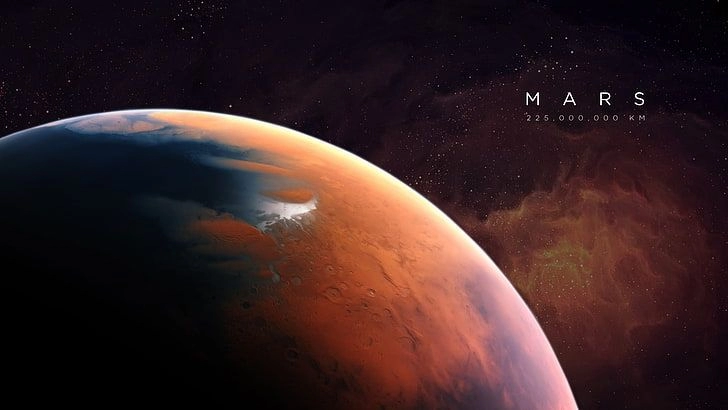

6 min read
Embark on a thrilling exploration of the Red Planet, a world of wonders that has fascinated humanity for centuries. Mars, our closest planetary neighbor with a similar day length, presents an array of mysteries and phenomena, making it a focal point for scientific inquiry and exploration.
From its vast dust storms to towering mountains, Mars offers a unique glimpse into the processes that have shaped the terrestrial planets of the solar system.
Mars is infamous for its colossal dust storms, some of which can envelop the entire planet for months. These storms arise due to the thin Martian atmosphere, which is about 1% as dense as Earth's, combined with surface temperature variations that create strong winds capable of lifting dust particles into the air. The dust storms of Mars can grow so large that they obscure the planet's surface from observation, hindering the operations of rovers and other machinery exploring its terrain. Understanding these storms is crucial for future manned missions to Mars, as they impact atmospheric conditions, visibility, and equipment functionality.
Among the most awe-inspiring features on Mars is Olympus Mons, the tallest volcano, and mountain, in the solar system. Towering approximately 22 kilometers (13.6 miles) above the surrounding plains, Olympus Mons stands nearly three times the height of Mount Everest. Its base spans about the size of the state of Arizona. Olympus Mons is a shield volcano, similar to those found in the Hawaiian Islands, but its size dwarfs any terrestrial counterpart. This gigantic feature is a testament to the volcanic activity that once shaped the Martian landscape and continues to intrigue scientists with questions about Mars's geologic and tectonic past.
The presence of water ice on Mars, particularly at its polar ice caps, hints at the planet's wetter and possibly more habitable past. Mars's ice caps, composed of water and carbon dioxide ice, vary in size with the seasons, offering clues about the Martian climate and atmospheric composition over time. The discovery of signs of liquid water flow in the form of gullies and the detection of subsurface lakes have fueled speculation about the possibility of life, past or present, on Mars. These findings underscore the importance of Mars exploration in understanding the conditions that might support life elsewhere in the universe.
Mars continues to captivate the imagination of scientists and enthusiasts alike with its mysteries and wonders. From its massive dust storms and the towering Olympus Mons to the intriguing presence of water ice and methane, Mars offers a unique laboratory for studying planetary processes and the possibility of life beyond Earth. As we continue to explore this fascinating world, each discovery brings us closer to understanding not only Mars but also the broader mysteries of the solar system and our place within it. The mysteries of Mars are not just challenges to overcome but opportunities to expand our knowledge and fuel our curiosity for the unknown.